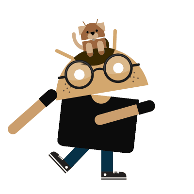
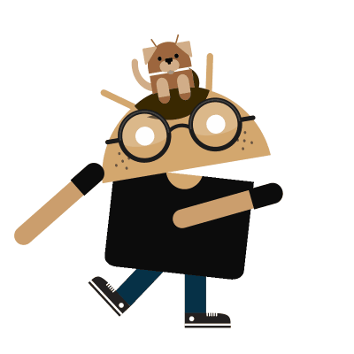
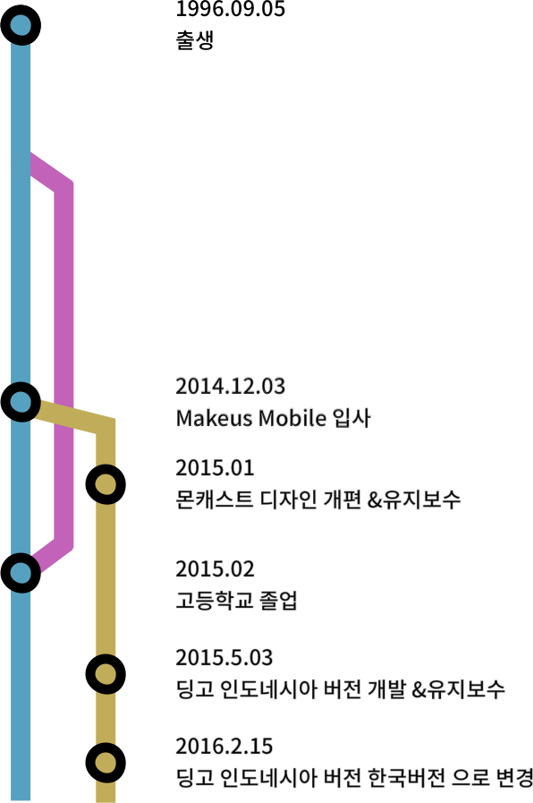

Develop
Android
Document
Jekyll blog (markdown),
Draw.io,
Confluence
Design
Sketch,
Zeplin
Other
Github flow,
Html,
xml,
Jenkins,
Jira,
Splunk mint
Moncast 2015.1 ~ 2015.8
입사 초기에는 동영상 플랫폼인 몬캐스트 에서 UI/UX 변경작업과 유지보수, 기능개발 등을 맡았다.
-UI/UX 개편
몬캐스트를 출시한 이후 앱이 정적인것 같다 피드백을 받아 1.5 개편때 프로그레스바 와 스플래쉬 애니메이션 등을 추가하고 UI/UX 적으로 불편한 부분을 디자인과 사용성 개편하는 작업을 하게되었다. 이작업을 하면서 여러 커스텀뷰를 제작해보았고 마테리얼 디자인을 적용 하였다.
-로그수집
동영상 플랫폼 이다보니 추천영상과 같은 시스템이 필요하여 사용자 로그를 남겨 데이터를 서버에 쌓아보는 작업을 하게되어 컨텐츠에서 머문시간, 다음 컨텐츠 를 무엇을봤는지 등등을 보내주었는데 retrofit/okhttp 라이브러리 와 gson 을 사용하여 서버와 통신을 하였다.
-버그수정
crashlytics 를 통해 에러로그를 수집하고 우선순위를 정하여 버그를 수정하였다.
-UI/UX 개편
몬캐스트를 출시한 이후 앱이 정적인것 같다 피드백을 받아 1.5 개편때 프로그레스바 와 스플래쉬 애니메이션 등을 추가하고 UI/UX 적으로 불편한 부분을 디자인과 사용성 개편하는 작업을 하게되었다. 이작업을 하면서 여러 커스텀뷰를 제작해보았고 마테리얼 디자인을 적용 하였다.
-로그수집
동영상 플랫폼 이다보니 추천영상과 같은 시스템이 필요하여 사용자 로그를 남겨 데이터를 서버에 쌓아보는 작업을 하게되어 컨텐츠에서 머문시간, 다음 컨텐츠 를 무엇을봤는지 등등을 보내주었는데 retrofit/okhttp 라이브러리 와 gson 을 사용하여 서버와 통신을 하였다.
-버그수정
crashlytics 를 통해 에러로그를 수집하고 우선순위를 정하여 버그를 수정하였다.
딩고 인도네시아2015.5 ~2016.2
몬캐스트 서비스를 접고 동남아 진출을 하게되어 맨처음으로 인도네시아를 타겟으로 정하여 동영상 플랫폼인 딩고라는 서비스를 런칭하게되었다. 딩고를 하면서 인도네시아 현지조사를 해본결과 인도네시아의 인터넷 환경이나 스마트폰 버전, 기기 파편화 등이 심각하였기 때문에 우리팀은 최대한 앱의 낮은용량과 낮은에러율, 인도네시아어,영어 지원, 사용성 을 목표로 두었다.그래서 에러로그 수집하는 MINT로 에러를 수집하여 에러율을 낮추고 뷰최적화, 이미지캐싱 등의 작업을 해주었고 반복되는 뷰가 많고 UI부분과 기능부분의 로직을 분리하기 위해 MVP패턴을 사용하였다.
몬캐스트를 개발할때 서로 업무공유도 안되고 컨벤션과 구조도 엉망이었기 때문에 딩고를 시작하기전에 협업을 위해 업무공유는 JIRA를 통해서하였고 컨벤션 정의나, 규칙, 구조문서 등은 Confluence를 사용하여 서로 공유 하였다.
-다국어지원
인도네시아어, 영어, 한국어 를 ios 와 android 공통되게 맞추기위해 구글 스프레드 시트에 정리하여 공통되게 사용하였다. 기본 언어를 인도네시아로하였고. values-ko 와 values-en 을 두어 사용자 언어에따라 한국어와 영어를 지원해주었다.
-뷰최적화
https://developer.android.com/studio/profile/dev-options-overdraw.html
위에 링크의 설명처럼 개발자모드에서 gpu overdraw 옵션과 rendering 옵션을 키면 뷰가 ui를 그리는시간과 얼마나 뷰가 겹쳐져있는지 확인이가능하다. 딩고에서 기한을 맞추기위해 뷰 구조를 급하게 잡아 필요없는 리소스 가 생겨 이부분을 최적화하는 작업을 해주었다. 딩고앱의 경우는 기본 바탕 색이 흰색이여서 각 뷰들의 뒷배경을 transparent 로 주고 뷰가 init 이 된경우에도 프로그레스 바가 뷰뒤에서 도는 경우가있어 이런 부분들을 잡아주니 생각보다 메모리와 성능상에 이점이 꽤 괜찮았다.
-페이스북 api
인도네시아에서 페이스북 sns 를 제일 많이사용하여 페이스북 api 를 RnD 하게 되어서 FB login,App Invites, App Link, App Monetization, Messenger, account kit 등을 사용해 보았지만 FB설정변수나 기능문제가 있어 App invite와 FB login 기능을 제외한기능은 사용하지 못하였다.
사용된 라이브러리 : ButterKnife, Realm, Gson, Retrofit, OkHttp, TwoWayView, Fresco, Otto, Facebook SDK
에러 트래킹 : Mint
CI : Jenkins
몬캐스트를 개발할때 서로 업무공유도 안되고 컨벤션과 구조도 엉망이었기 때문에 딩고를 시작하기전에 협업을 위해 업무공유는 JIRA를 통해서하였고 컨벤션 정의나, 규칙, 구조문서 등은 Confluence를 사용하여 서로 공유 하였다.
-다국어지원
인도네시아어, 영어, 한국어 를 ios 와 android 공통되게 맞추기위해 구글 스프레드 시트에 정리하여 공통되게 사용하였다. 기본 언어를 인도네시아로하였고. values-ko 와 values-en 을 두어 사용자 언어에따라 한국어와 영어를 지원해주었다.
-뷰최적화
https://developer.android.com/studio/profile/dev-options-overdraw.html
위에 링크의 설명처럼 개발자모드에서 gpu overdraw 옵션과 rendering 옵션을 키면 뷰가 ui를 그리는시간과 얼마나 뷰가 겹쳐져있는지 확인이가능하다. 딩고에서 기한을 맞추기위해 뷰 구조를 급하게 잡아 필요없는 리소스 가 생겨 이부분을 최적화하는 작업을 해주었다. 딩고앱의 경우는 기본 바탕 색이 흰색이여서 각 뷰들의 뒷배경을 transparent 로 주고 뷰가 init 이 된경우에도 프로그레스 바가 뷰뒤에서 도는 경우가있어 이런 부분들을 잡아주니 생각보다 메모리와 성능상에 이점이 꽤 괜찮았다.
-페이스북 api
인도네시아에서 페이스북 sns 를 제일 많이사용하여 페이스북 api 를 RnD 하게 되어서 FB login,App Invites, App Link, App Monetization, Messenger, account kit 등을 사용해 보았지만 FB설정변수나 기능문제가 있어 App invite와 FB login 기능을 제외한기능은 사용하지 못하였다.
사용된 라이브러리 : ButterKnife, Realm, Gson, Retrofit, OkHttp, TwoWayView, Fresco, Otto, Facebook SDK
에러 트래킹 : Mint
CI : Jenkins
딩고 인도네시아2016.2 ~ 2016.6
기존 서비스 되고있던 딩고 인도네시아 서비스를 한국에서 아카이빙용 으로 사용하고 싶다는 요청과 버즈피드 비디오 형식의 메인뷰를 적용 한다고해서 버즈피드 비디오의 앱조사와 문서작업, 1차 기능 까지 만들었으나 적용하지 않는다고 결정이나 쓸모없는 기능제거와 잔버그들을 수정하여 올리고 유지보수 했다.
딩고 기본 동작 동영상